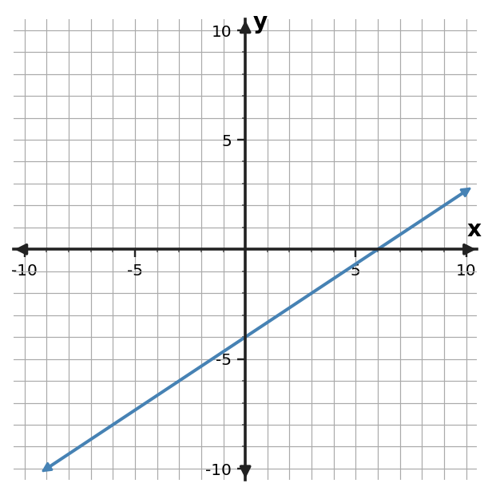

1. Find the slope of the line through $(0,-4)$ and $(4,-16)$.
1. Find the slope of the line through $(0,-4)$ and $(4,-16)$.
2. Use the table to determine the constant rate of change in $y$ per 1 unit of $x$.
| $x$ | $y$ |
|---|---|
| $-2$ | $-2$ |
| $0$ | $2$ |
| $2$ | $6$ |
| $4$ | $10$ |
3. Determine the slope of the line shown. Use two grid points to support your calculation.

4. A water pump moves 33 gallons in 3 minutes at a constant rate. What is the constant rate in gallons per minute?
5. Classify the slope of the horizontal line $y=0$.
6. Two points are $(2,0)$ and $(5,9)$. A student computes $\frac{9-0}{2-5}$ and reports the slope as $-3$. Identify and repair the subtraction-order error.